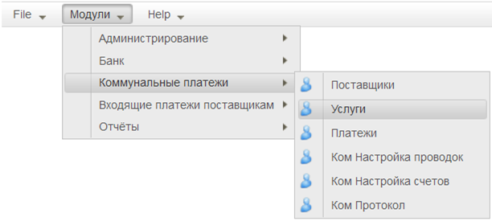
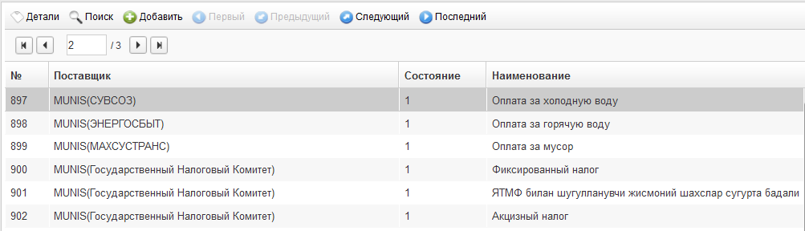
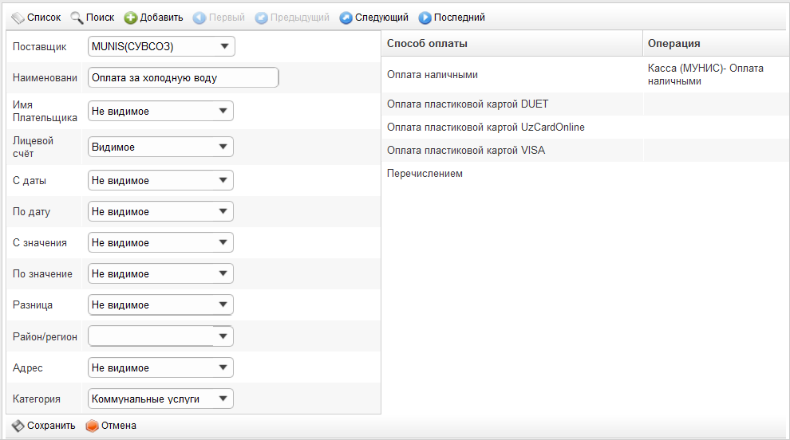
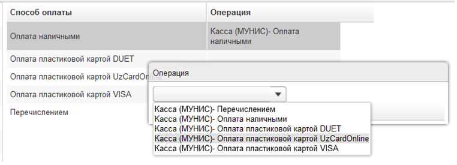

Модуль поставщиков доступен из пункта меню «Модули \ Коммунальные платежи \ Услуги» (см. Рисунок 1).

Рисунок 1
Работа в модуле начинается со списка услуг (см. Рисунок 2).

Рисунок 2
Первоначально список услуг, оказываемых поставщиками Системы, формируется на основании данных, переданных из Центробанка. В дальнейшем Банк может самостоятельно регистрировать дополнительные услуги.
Для отображения формы регистрации новой услуги необходимо нажать кнопку  , расположенную в панели управления над списком. Для открытия формы редактирования услуги из списка необходимо нажать кнопку
, расположенную в панели управления над списком. Для открытия формы редактирования услуги из списка необходимо нажать кнопку  .
.
Форма содержит следующие поля (см. Рисунок 3):

Рисунок 3
Для каждой услуги необходимо описать допустимые способы оплаты - назначить операцию вызываемую при оплате (см. Рисунок 4):

Рисунок 4
Для назначения операции нужно кликнуть мышью на строке с настраиваемым способом оплаты. Далее из открывшегося списка выбрать нужную запись.
Для сохранения данных в форме нужно нажать кнопку  .
.
Для отмены внесённых изменений нужно нажать кнопку  .
.